Planificación y Gestión de un Centro Deportivo
Planificación y Gestión de un Centro Deportivo
En FitnessGym tu equipo emprende un nuevo centro deportivo: analiza la demanda de una ciudad con 4 distritos, define su propuesta de valor, elige local e instalaciones, programa actividades, organiza al personal y proyecta ingresos y resultados. Después compite durante 4 periodos contra otros gimnasios del mismo mercado, ajustando precios, marketing, personal y financiación para hacer crecer el Valor de la Compañía.
CompanyGame ofrece una amplia gama de simuladores de negocio organizados por nivel de dificultad y área de conocimiento. FitnessGym se ubica en el área de Emprendimiento, con temáticas de finanzas, marketing de servicios y operaciones.
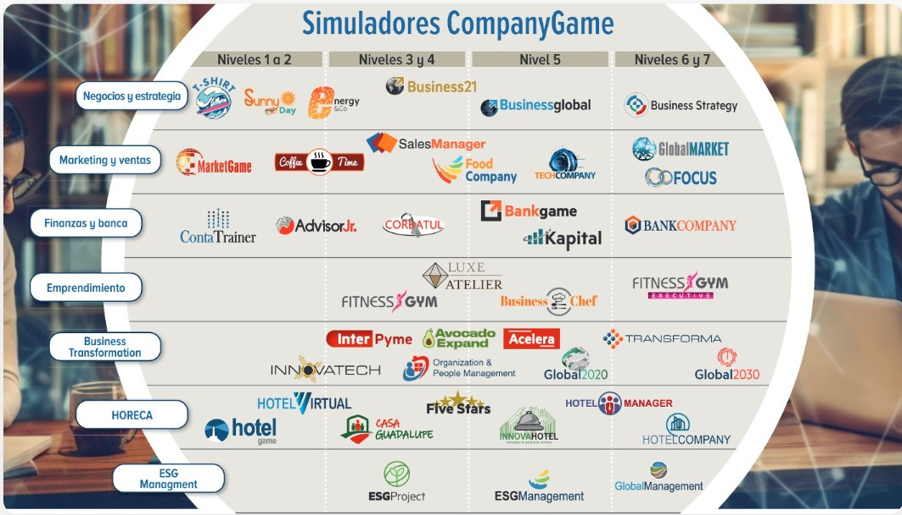
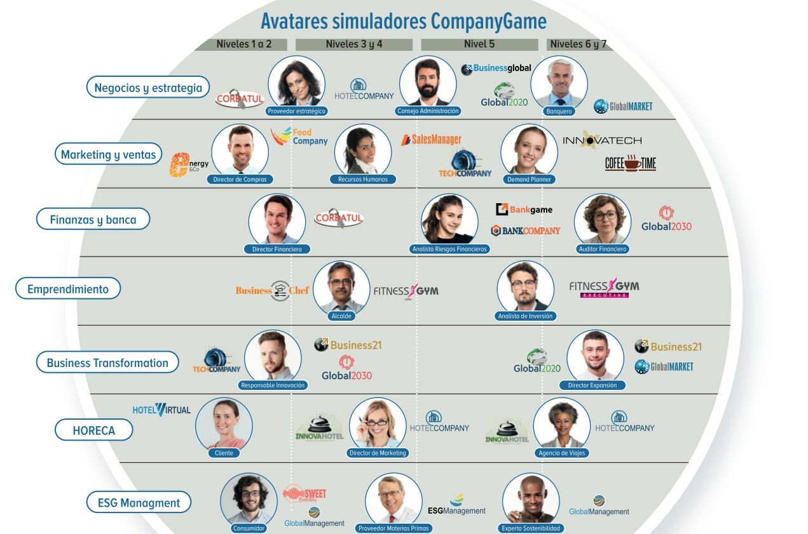
Guarda la imagen de avatares como assets/avatares.png en la carpeta del proyecto y aparecerá aquí automáticamente, con el mismo estilo que la cartelera.
Conoce la plataforma antes de empezar a competir
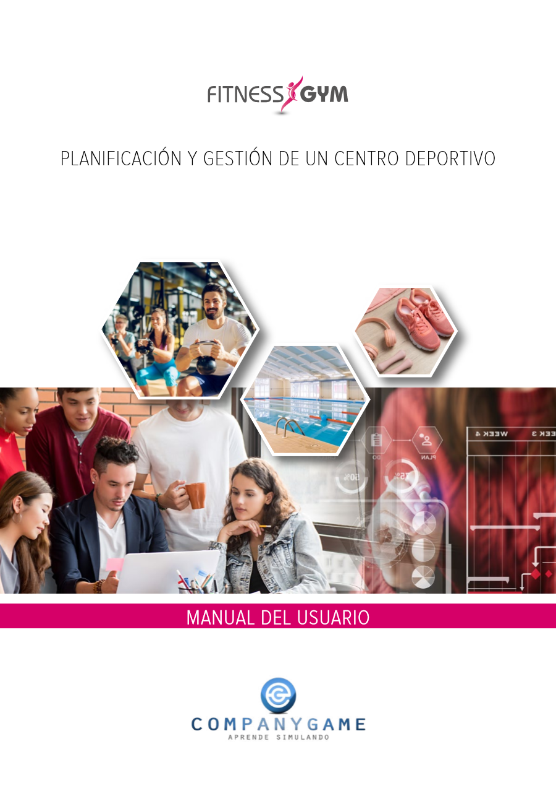
Guarda la portada o una captura del manual como assets/manual-cover.png en la carpeta del proyecto y aparecerá aquí automáticamente.
El manual explica en detalle cada área de decisión, las fórmulas del simulador y cómo interpretar el Cuadro de Mando. Consúltalo siempre que tengas dudas antes de enviar tus decisiones.
📥 DESCARGAR EL MANUALPlanificar un nuevo centro deportivo —ubicación, instalaciones, equipamiento, actividades, personal y financiación— y gestionarlo durante 4 periodos compitiendo con otros gimnasios del mismo mercado.
Una ciudad de tamaño medio con 4 distritos, cada uno con su volumen de población y perfil de habitantes (edad, renta), y 5 segmentos de clientes con preferencias muy distintas.
Planificar (periodo 0): diseñas el negocio y elaboras un plan de negocio a 3 años. Competir (periodos 1 a 4): cada ronda es un año de gestión frente a los demás equipos.
Servicios – Entretenimiento (fitness). Nivel 4-5, modalidad competitiva, con una duración de 24 a 48 horas. Temáticas: emprendimiento, finanzas, marketing de servicios y operaciones.
Analizas la ciudad, sus 4 distritos y los 5 segmentos; defines tus prioridades estratégicas, los segmentos prioritarios y el distrito donde te ubicarás.
Eliges el local, repartes su superficie entre las instalaciones y decides su nivel de calidad. Aquí se concentra la mayor parte de la inversión.
Programas las actividades dirigidas, diseñas la marca y la promoción, y dimensionas la plantilla, su salario y su formación.
Estimas ocupación, socios y precios; el simulador proyecta ingresos, cuenta de resultados, balance y necesidades de financiación.
Pones en marcha el gimnasio frente a los demás equipos durante 4 periodos y compruebas si se cumplen las previsiones de tu plan.
Una vez elegido el local, el equipo reparte toda su superficie entre 6 instalaciones y define el nivel de calidad de cada una. A mayor tamaño y calidad, mayor atractivo para el cliente… pero también mayor inversión que habrá que rentabilizar.
| Instalación | Rol en la propuesta de valor |
|---|---|
| 🏋️ Sala Fitness | Núcleo del centro: máquinas y peso libre para el entrenamiento diario. |
| 🏊 Piscina | Base de las actividades acuáticas (AquaGym); exige mucho espacio y mantenimiento. |
| 🎾 Squash-Pádel | Actividad competitiva y social, atractiva para perfiles deportistas. |
| 🧘 Salas de Actividades | Espacio de las clases dirigidas: Aerobic, Yoga, Pilates, Spinning, Danza Zen… |
| 💆 Fisioterapia y Recuperación | Clave para el segmento Recuperación, muy exigente con la calidad. |
| 🚪 Zonas Comunes | Recepción, vestuarios y espacios de espera: el confort general del centro. |
Decoración básica. No convence a los segmentos más exigentes, pero a otros no les importa.
Aire acondicionado en todas las instalaciones, buena decoración y confort medio.
La calidad más alta del mercado, con diseño profesional: muy valorada por los segmentos exigentes.
Espacio por socio si todos coincidieran a la vez. Un ratio alto da confort; uno bajo permite más socios.
La inversión en Instalaciones no puede superar 8,5 millones si alquilas el local, ni 10,5 millones si lo compras. Superar el límite genera un coste extraordinario que limitará tus resultados en la fase de gestión.
Cuota mensual por segmento, matrícula y precios de taquilla y toalla.
Coste por hora de actividad y número de sesiones semanales de cada una.
Presupuesto de promoción y prioridad de cada acción según tus segmentos.
Tamaño de la plantilla por departamento, formación y variación salarial.
Intensidad de ocupación (m² por cliente) y ajustes de superficie por instalación.
Proyectos de mejora del nivel de servicio y de la comercialización.
Préstamo bancario a largo plazo y ampliaciones de capital.
FitnessGym se desarrolla en una ciudad de tamaño medio organizada en 4 distritos. Cada segmento tiene un peso distinto en cada distrito según el volumen de población y su perfil (edad, renta).
Al elegir gimnasio, cada segmento pondera de forma distinta estos factores:
El Valor de la Compañía representa la cotización que los inversores asignan a tu gimnasio: refleja los resultados de los últimos periodos y las expectativas para los siguientes. Según el valor alcanzado se establece el ranking final. Ojo: dejar decisiones sin tomar reduce tu competitividad.
Descripción: Es el factor de mayor peso en el ranking.
¿Qué evalúa? Se vincula directamente con los beneficios obtenidos por la compañía: considera tanto el valor alcanzado en cada periodo como su evolución en los últimos periodos.
Descripción: Te compara directamente con los demás gimnasios.
¿Qué evalúa? La participación alcanzada por tu empresa en el mercado, en términos de número de socios captados.
Descripción: Premia la calidad de tu plan de negocio.
¿Qué evalúa? La evaluación competitiva de los resultados más relevantes obtenidos en la fase de planificación.
Descripción: Mide la eficiencia y la salud financiera.
¿Qué evalúa? La relación entre los resultados obtenidos y los recursos aportados por los socios, y la capacidad de hacer frente a las obligaciones de pago.
Descripción: Cómo te perciben los clientes.
¿Qué evalúa? La valoración alcanzada por la marca entre los segmentos de demanda, en una escala de 10 a 100.
Descripción: La experiencia real del socio en el centro.
¿Qué evalúa? La satisfacción por el servicio prestado y la valoración de las actividades ofrecidas.
Descripción: La calidad física del gimnasio.
¿Qué evalúa? La evaluación de la calidad y el mantenimiento de los equipos e instalaciones.
Descripción: La coherencia de tu estrategia.
¿Qué evalúa? La evolución competitiva de la propuesta de valor realizada frente a lo que buscan los segmentos.
Fase 1 · Diseña tu gimnasio y proyecta sus resultados antes de abrir
Pantalla de inicio de la fase: cuatro pasos para entender el mercado — escenario de la simulación, presentación de tu ciudad, mercado y segmentos, y competencia.
Antes de decidir nada conviene tener el mapa completo de lo que hay que analizar: entorno, ciudad, clientes y rivales.
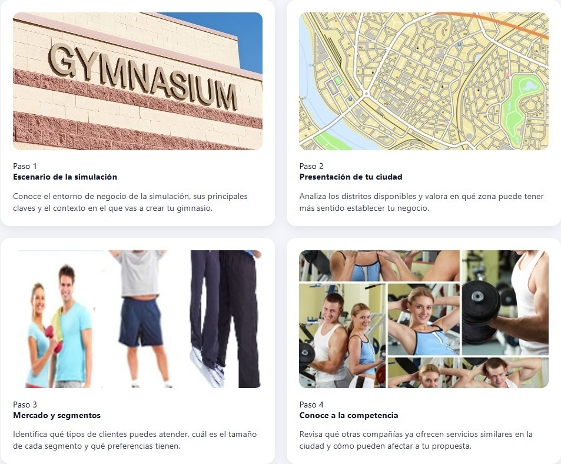
Contexto del sector del bienestar: las motivaciones para ir al gimnasio (deporte intenso, estar en forma, estética, prescripción médica, vida social) y las tipologías de usuario.
Cada cliente llega por razones distintas; entender esas motivaciones es la base de una propuesta de valor diferenciada.
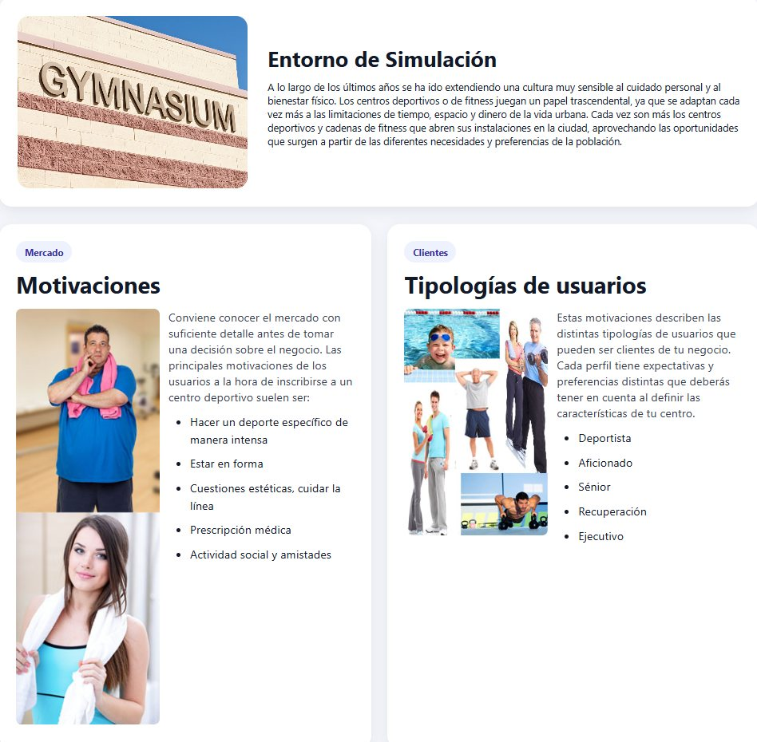
Valores del escenario: clima político y social, IPC, PIB y tipo de interés, variables que condicionan la demanda y el coste de financiarte.
La economía general influye en cuánta gente puede pagar un gimnasio y en cuánto te costará el dinero prestado.
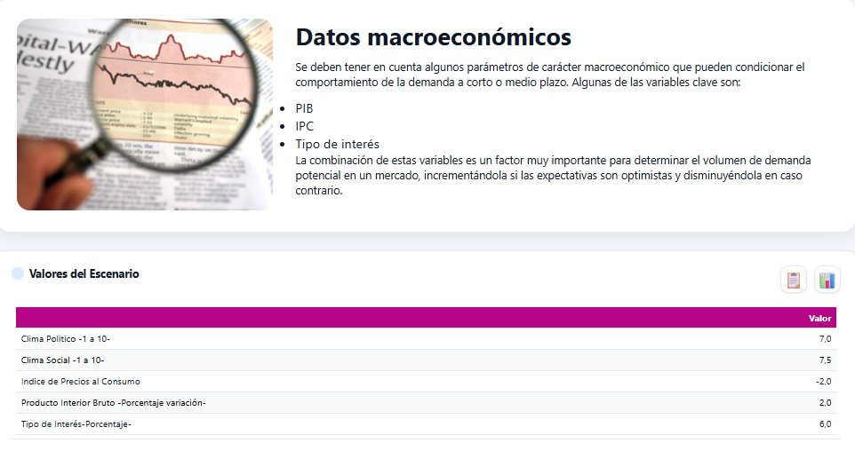
Población de los 4 distritos y su distribución por tramos de edad (16-25, 26-35, 36-55 y más de 55 años), en tabla y gráfico.
Los distritos difieren en tamaño y en edad de sus habitantes: dónde te ubiques cambia a quién puedes atender.
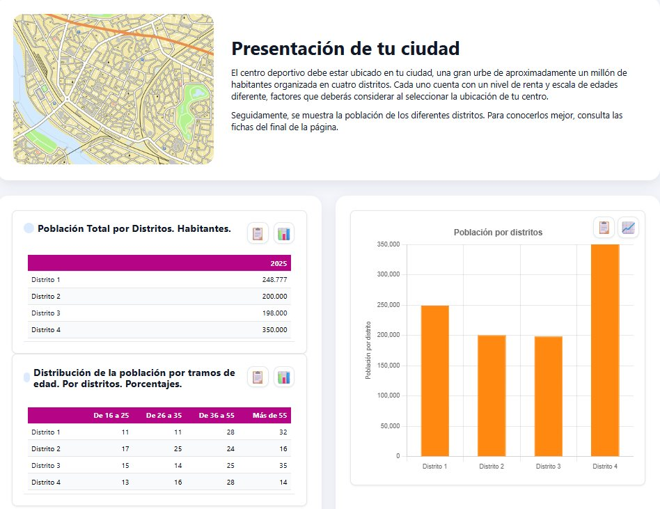
Ficha de cada uno de los 5 segmentos —Deportista, Aficionado, Senior, Ejecutivo y Recuperación— con su perfil y sus hábitos de uso.
Ponerle cara a cada segmento te ayuda a decidir a quién dirigirte y qué ofrecerle.
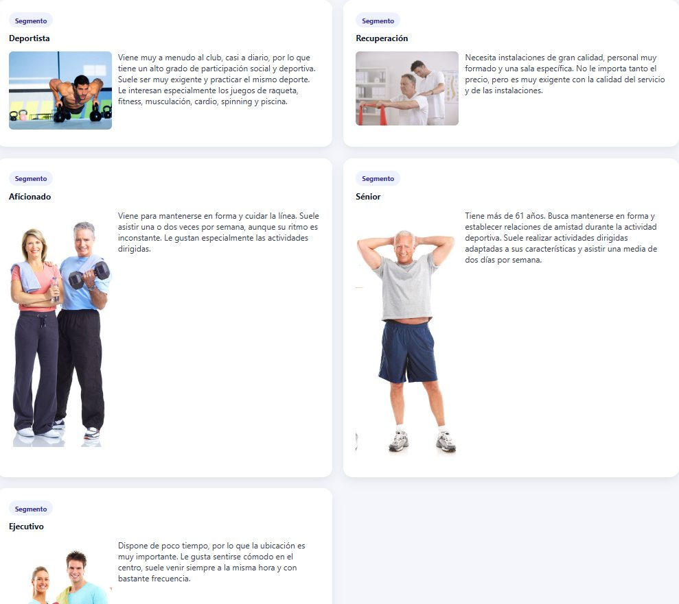
Qué criterios pesan más en cada segmento al elegir gimnasio (instalaciones, servicio, precio, ubicación y marca, valorados de 1 a 5) y sus preferencias sobre instalaciones.
Es la información clave para construir una propuesta que encaje con los segmentos que priorices.
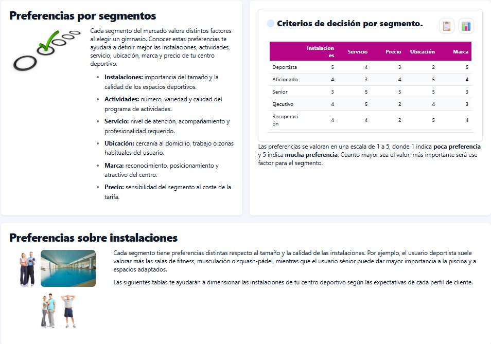
Demanda potencial por distrito y segmento, en número de personas y en porcentaje.
Cuantifica dónde hay más clientes potenciales de cada tipo: la base para elegir distrito y segmentos.
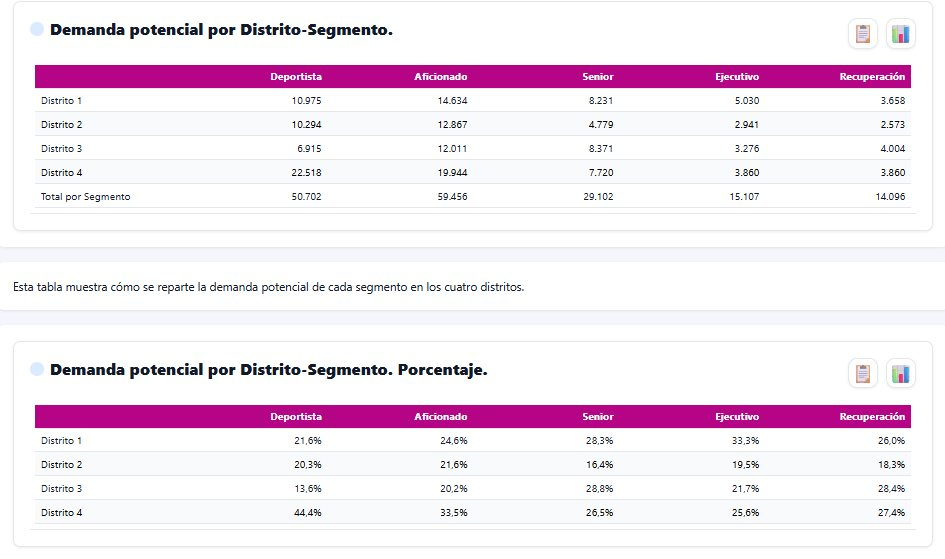
Lo que debes concretar: oportunidad, alternativas, propuesta de valor, prioridades estratégicas, segmentos y distrito. Incluye el límite de inversión en instalaciones: 8,5 millones si alquilas el local y 10,5 millones si lo compras.
Toda la estrategia se diseña dentro de un presupuesto limitado; superarlo genera un coste extraordinario.
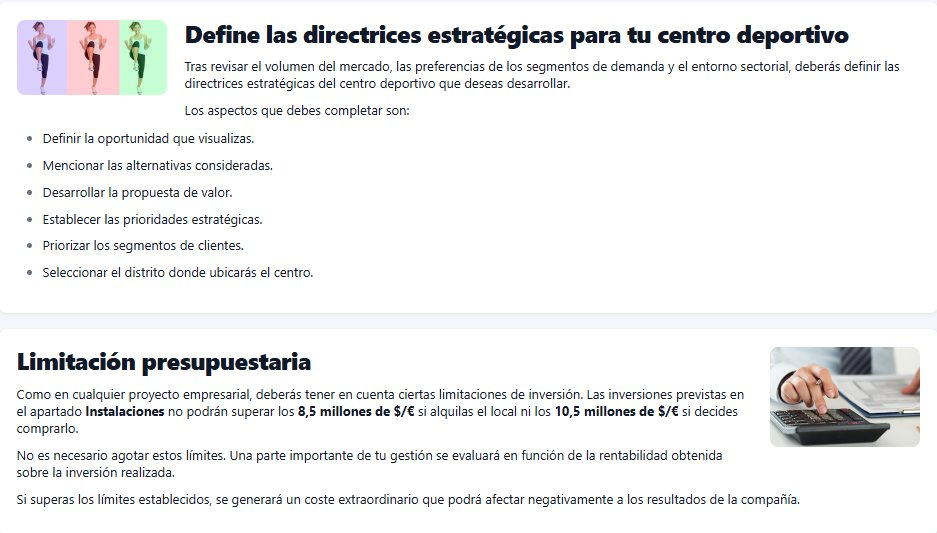
Redactas la oportunidad de mercado, las alternativas consideradas y tu propuesta de valor, y repartes las prioridades estratégicas (instalaciones, actividades, servicio, ubicación, marca y precio) de 1 a 5, con un máximo de 19 puntos.
No puedes priorizarlo todo: el límite de puntos te obliga a elegir en qué te diferencias.
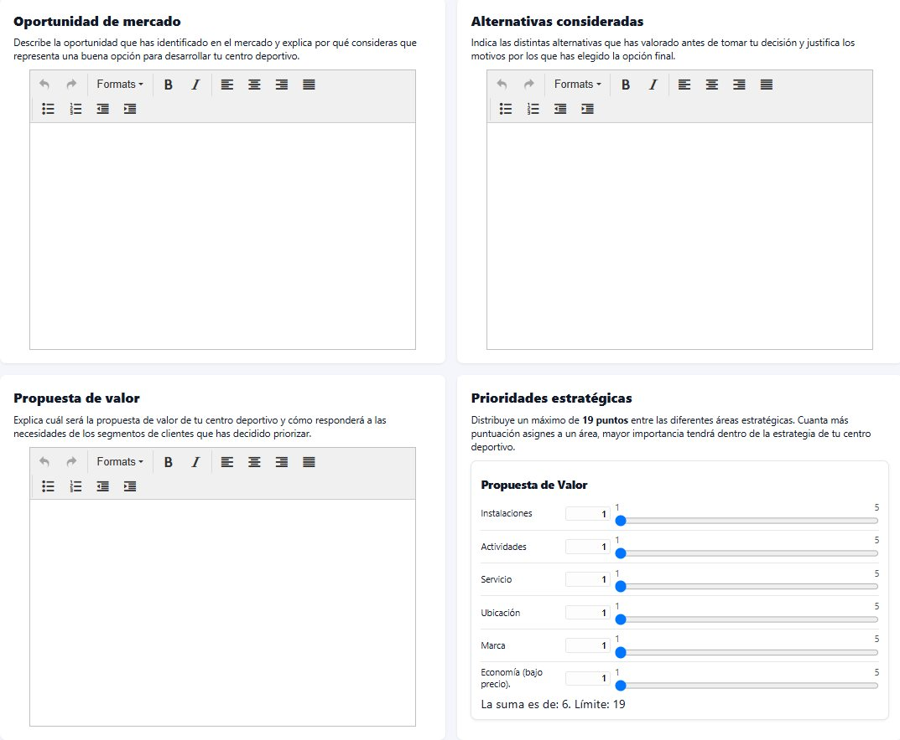
Priorizas los 5 segmentos de 1 a 5 (máximo 15 puntos en total) y justificas tu elección.
Atender a todos por igual diluye la propuesta: hay que decidir a quién te diriges y por qué.
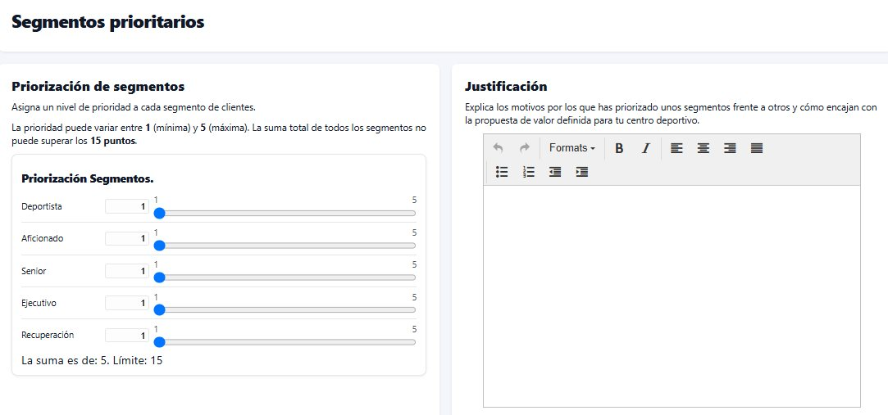
Seleccionas el distrito donde estará tu gimnasio y argumentas los criterios que usaste.
El distrito define qué clientes tienes cerca y con qué competencia te enfrentas; una vez elegido el local ya no se puede cambiar.
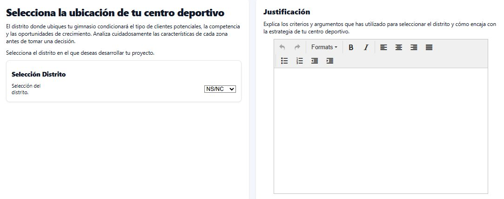
Resumen del planteamiento: tus prioridades estratégicas y la evaluación de la propuesta de valor por segmento (en %). Con «Recalcular» actualizas el resultado.
Te dice si tu propuesta se acerca a lo que buscan los segmentos elegidos antes de seguir avanzando.
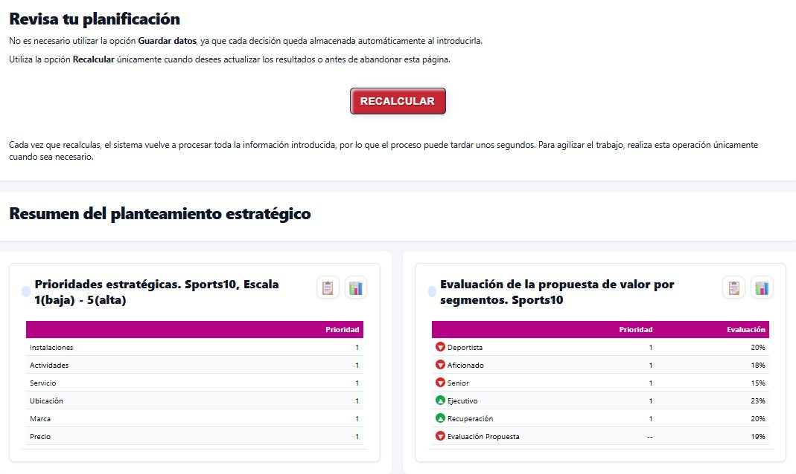
Las tres decisiones de esta fase —seleccionar el local, distribuir la superficie y fijar la calidad— junto con su evaluación y la inversión resultante.
Aquí la estrategia se convierte en un producto físico… y en la mayor parte de la inversión.
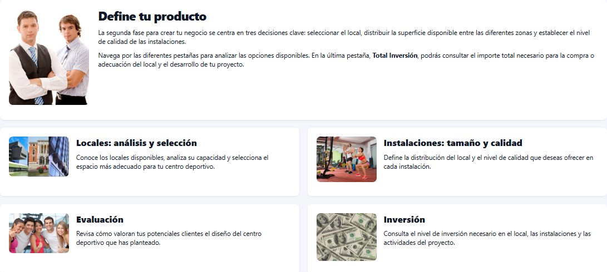
Tres locales por distrito, con sus criterios (tamaño, parking, ampliación, terraza, accesibilidad) y características económicas (tipo, estado de conservación, alquiler mensual o precio de compra).
Un local grande da capacidad, pero deja menos presupuesto para calidad, actividades o formación.
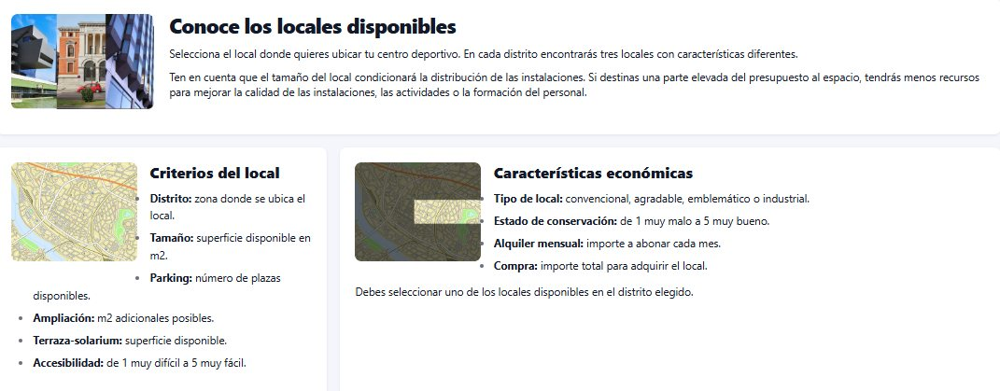
Con la superficie del local (3.000 a 10.000 m²) y el ratio de ocupación (0,6 a 1,8 m² por cliente) calculas la capacidad máxima de socios.
Un ratio alto da confort pero limita los socios; uno bajo llena el gimnasio a costa de la experiencia.
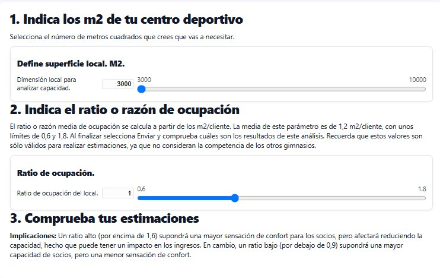
Eliges el local definitivo valorando distrito, superficie, alquiler o compra, estado de conservación, accesibilidad y posibilidad de ampliación.
Es una decisión que no podrás cambiar durante la gestión: debe estar muy bien fundamentada.
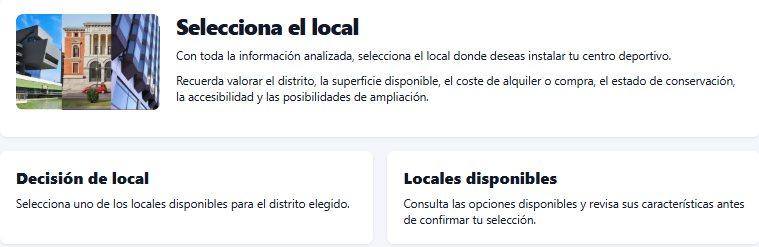
Para qué sirve cada instalación y cuánto espacio o mantenimiento requiere: sala fitness, piscina, squash-pádel, salas de actividades, fisioterapia y recuperación, y zonas comunes.
Cada instalación cuesta y ocupa distinto, y no todas atraen a los mismos clientes.
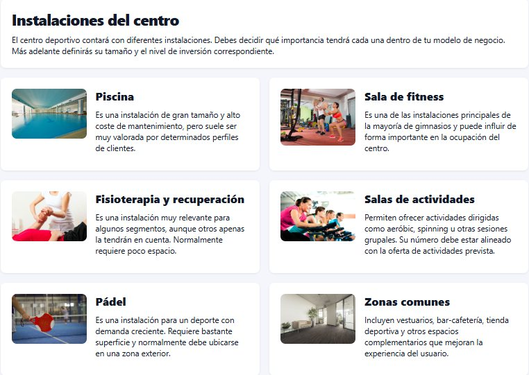
Tamaño preferido de cada instalación (pequeño, mediano, grande o extra grande) según el segmento.
Sirve de guía para dimensionar cada espacio según los segmentos a los que apuntas.
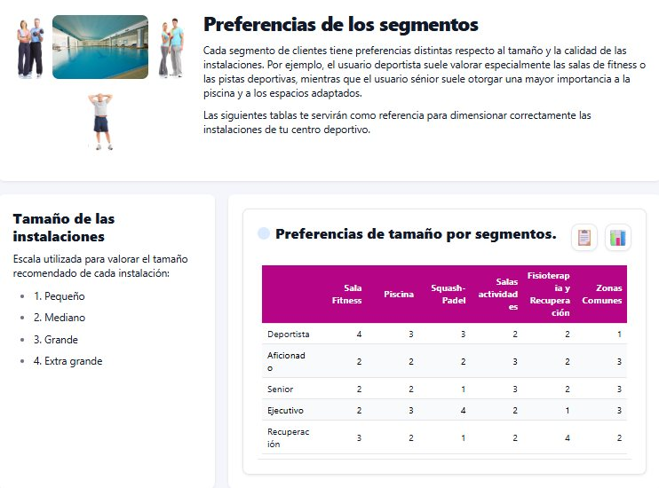
Repartes los m² del local entre las 6 instalaciones, con una tabla de superficies mínimas recomendadas como referencia.
Cada metro asignado a una instalación es un metro menos para otra, y no deben quedar m² desocupados.
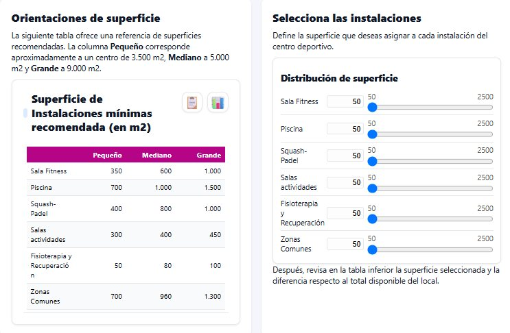
Eliges el nivel de calidad de cada instalación —Funcional, Estándar o Superior— viendo la inversión por m² de cada nivel.
Más calidad aumenta el atractivo pero encarece la obra: hay que elegir dónde invertir más.
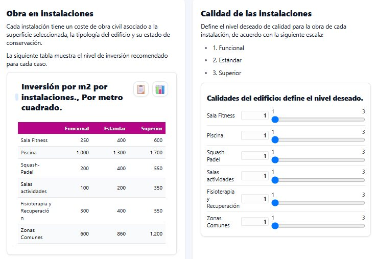
Atractivo del edificio y del equipamiento por segmento (escala 1 a 10), comparado con tu prioridad de segmentos.
Comprueba si el centro que diseñaste resulta atractivo justo para los segmentos que priorizaste.
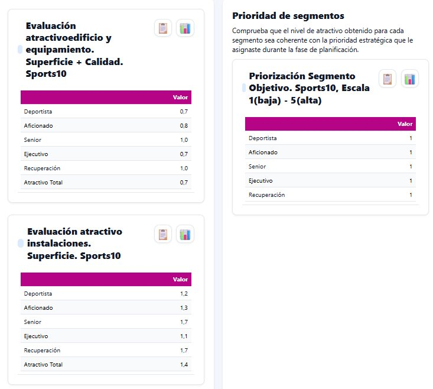
Resumen del local elegido (distrito, superficie, alquiler o compra) y de la inversión en edificio e instalaciones, con el total.
Muestra cuánto cuestan tus decisiones y si caben dentro del límite presupuestario.
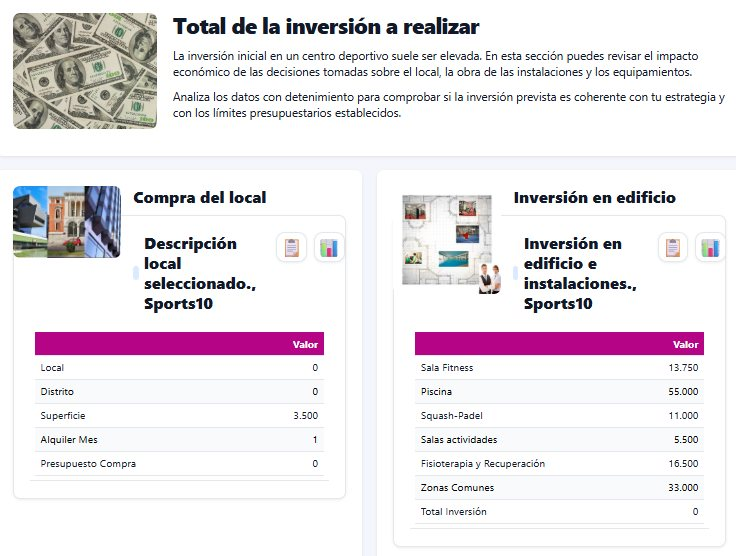
Las actividades dirigidas por categoría: musculares, aeróbicas, Body & Mind y acuáticas (Aerobic, AquaGym, Yoga, Danza Zen, SportFitness, Pilates y Spinning, entre otras).
Las actividades son uno de los grandes reclamos del gimnasio y una vía clara de diferenciación.
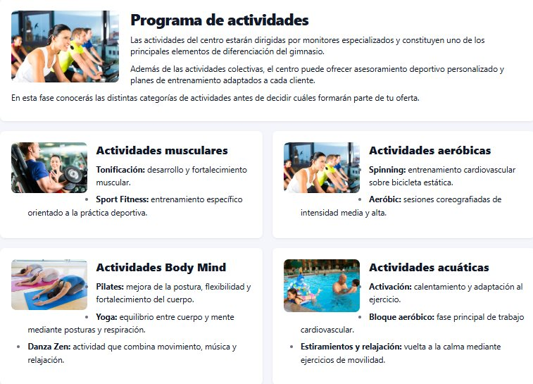
Interés de cada segmento por cada actividad, en escala de 1 (poco) a 3 (mucho).
Te dice qué actividades programar para atraer a tu público objetivo.
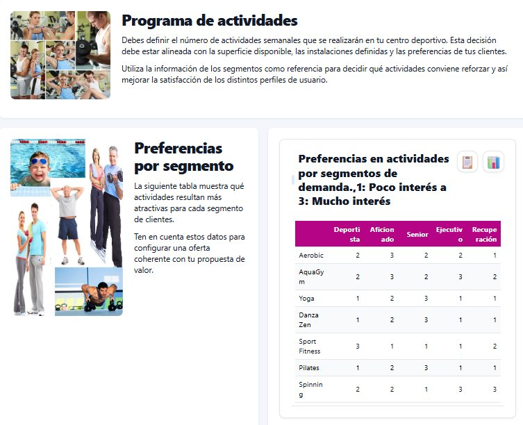
La superficie asignada a salas y piscina, y los criterios de capacidad: cuántas sesiones diarias admite cada sala de actividades y la piscina.
El espacio limita cuántas actividades puedes ofrecer sin que el cliente se sienta incómodo.
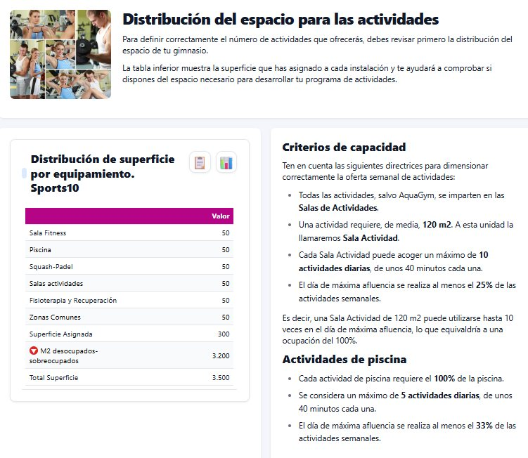
Decides el coste por hora de actividad (6 a 50) y el número de sesiones semanales de cada actividad (0 a 30) para los años 1 a 3; el simulador calcula el coste total.
A mayor coste por hora, mayor calidad de la sesión, pero cada actividad suma gasto.
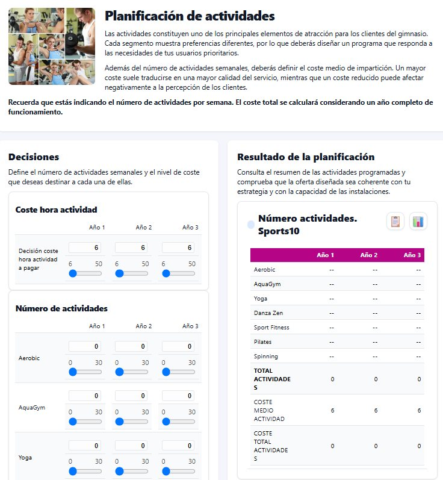
Atractivo de tus actividades por segmento (0 a 10), coste anual por socio y adecuación del espacio: menos de 80 indica espacio desaprovechado, de 80 a 120 es correcto y más de 120, exceso de actividades.
Comprueba que tu oferta sea coherente con la estrategia y quepa en tus instalaciones.
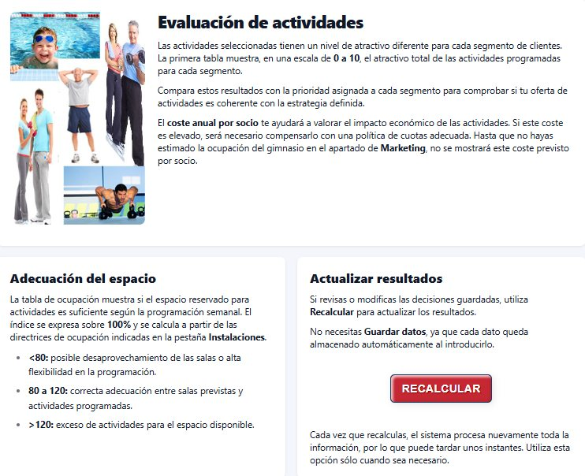
Las cuatro partes de la fase: evaluación del atractivo, ocupación, marca y promoción.
Es el puente entre el centro que diseñaste y los socios que necesitas captar.
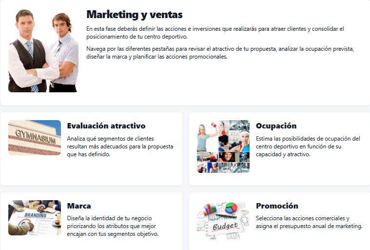
Atractivo de tus instalaciones y actividades para cada segmento, junto a tu prioridad de segmentos.
Muestra qué segmentos encajan mejor con lo que ya diseñaste y dónde conviene reforzar la propuesta.
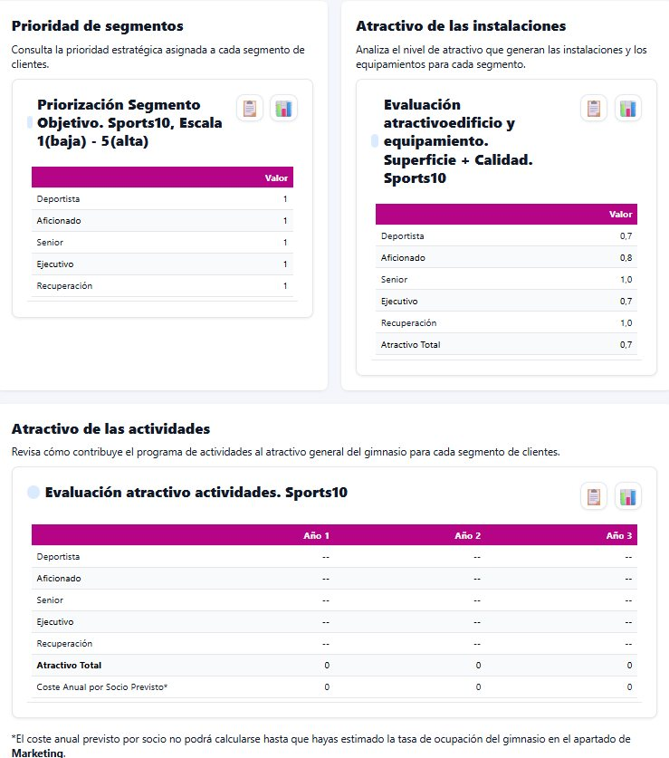
Ajustas el ratio de ocupación (0,6 a 1,8 m²/cliente), ves la capacidad máxima de socios y estimas la tasa de ocupación de los años 1 a 3, con la ocupación de los competidores como referencia.
Las previsiones de ocupación son la pieza clave de la viabilidad: ni muy optimistas ni pesimistas.
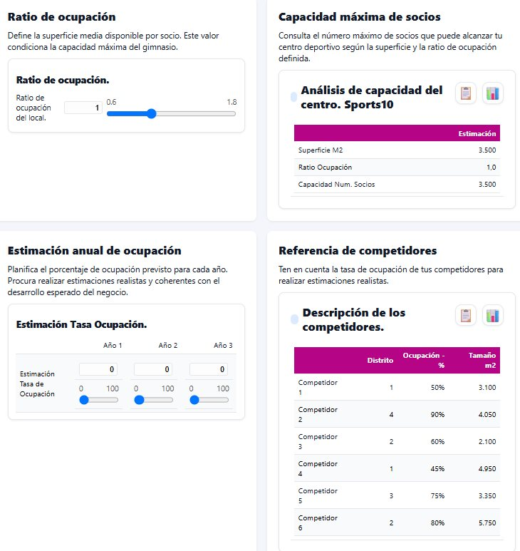
Socios previstos por distrito y su peso sobre la demanda potencial de cada uno.
Superar el 20 % de la demanda potencial de un distrito suele ser difícil: te ayuda a mantener estimaciones realistas.
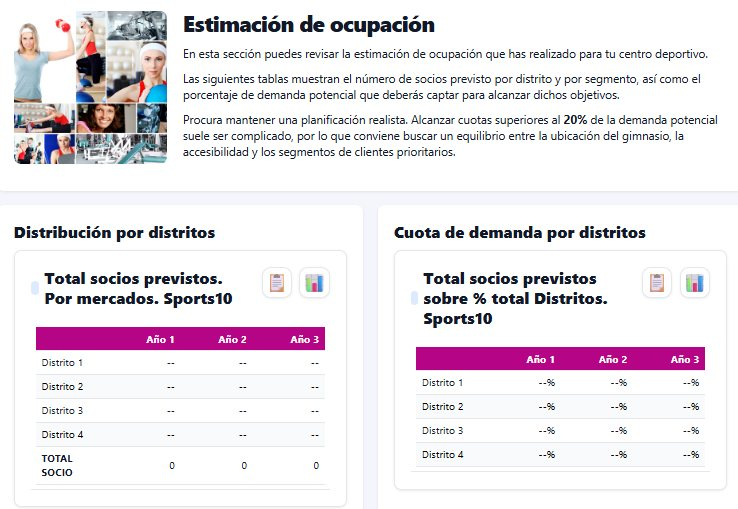
Las acciones disponibles: mailing, buzoneo, patrocinio, redes sociales, publicidad en medios generales y especializados, material promocional y visitas a empresas y colectivos.
Cada segmento responde a canales distintos: no es lo mismo llegar a un Deportista que a un Senior.
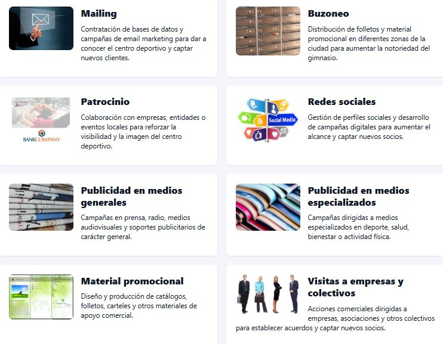
Defines el presupuesto anual de marketing para los años 1 a 3 y cómo repartirlo entre segmentos y acciones.
El marketing pesa sobre todo en los primeros años para darte a conocer, pero un gasto excesivo lastra los resultados.
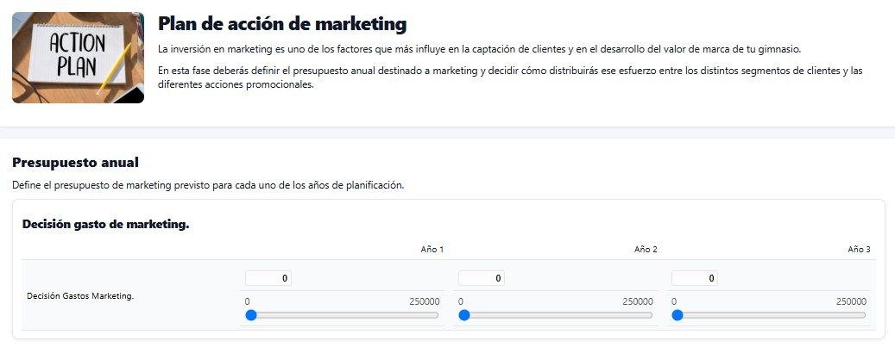
Atributos de marca que prefiere cada segmento (género, edad, funcional-servicio, deportivo, económico, extrovertido, a la moda-clásico) y la evaluación de tu marca por segmento.
Obtener una valoración suficiente de la marca es requisito para poder finalizar la planificación.
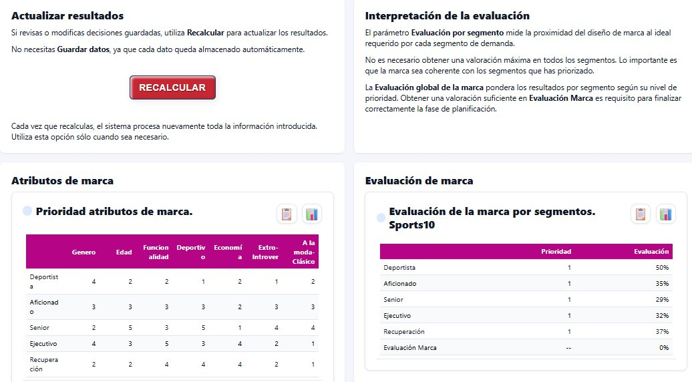
Tres bloques: gastos de mantenimiento, plantilla (perfiles, número de empleados y nivel salarial) y gastos de personal.
La organización que definas condiciona el nivel de servicio que recibirán tus socios.
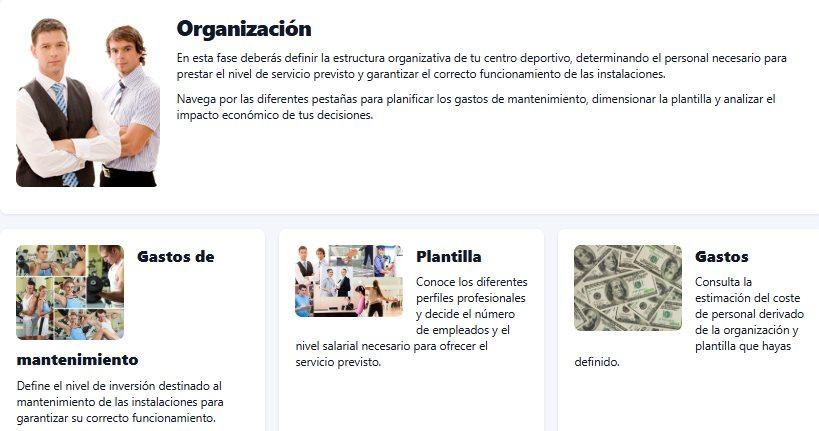
Eliges qué porcentaje de la inversión en local y equipamiento dedicas a mantenimiento y limpieza (0,75 % a 5 %) cada año.
Poco mantenimiento deteriora las instalaciones y la experiencia; demasiado desperdicia recursos.
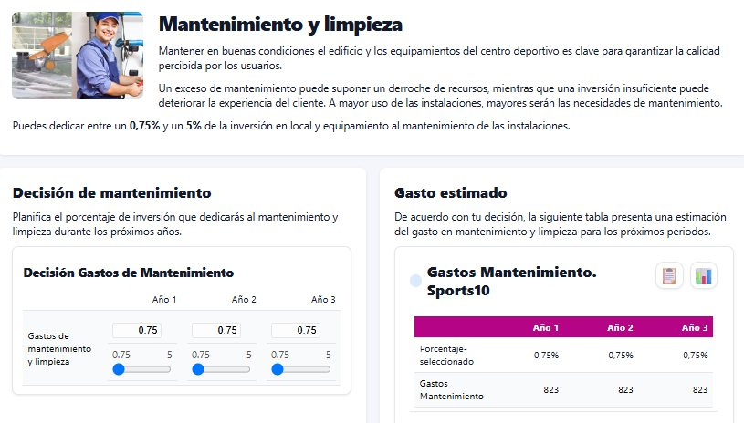
Funciones de cada perfil: dirección, recepción-comercial, monitor-asesor deportivo, fisioterapeuta, y mantenimiento y limpieza.
Cada puesto cumple un papel distinto en la experiencia del cliente.
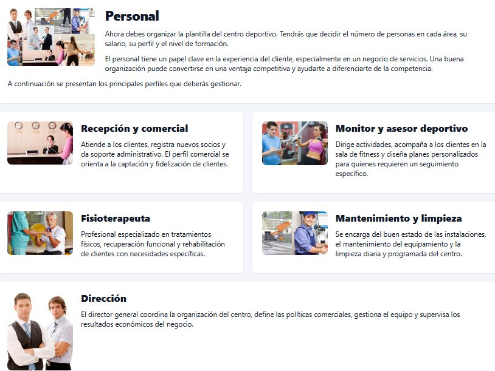
Qué espera cada segmento del personal: por ejemplo, Recuperación pide fisioterapia muy cualificada y Ejecutivo, limpieza, mantenimiento y atención ágil.
Te orienta para reforzar los puestos que más valora tu público objetivo.
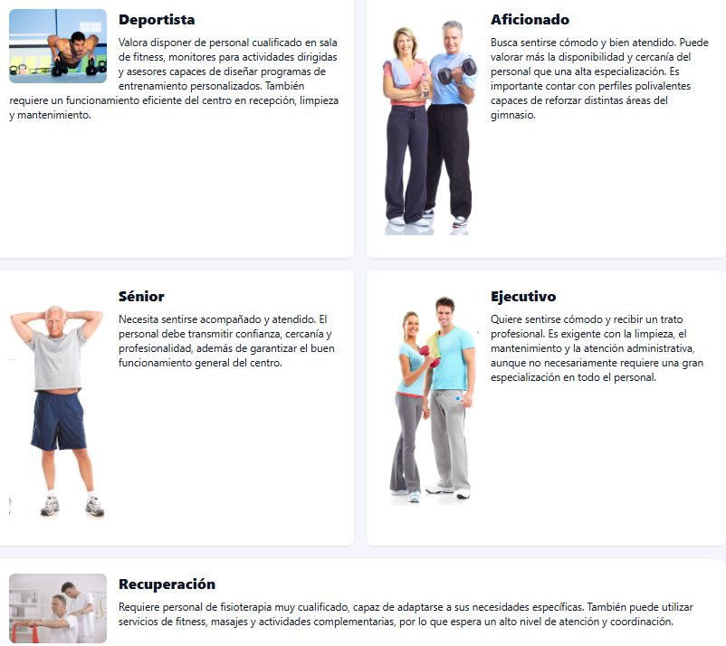
Fijas la variación del salario sobre el estándar recomendado para cada departamento (de −18 % a +18 %).
Un mejor salario atrae perfiles más competentes, pero aumenta el coste de personal.
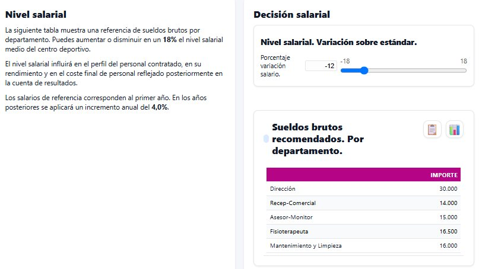
Ajustas la plantilla estándar que propone el sistema en cada departamento (de −20 % a +20 %) y ves el número de personas por año.
Más personal mejora el servicio; menos personal ahorra costes pero puede resentir la calidad.
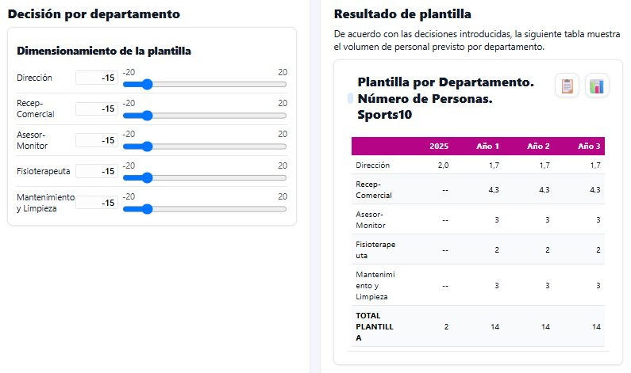
Defines el gasto anual en formación del personal, alineado con el tamaño del centro, el cliente objetivo y las actividades previstas.
La formación eleva la preparación del equipo y, con ella, el nivel de servicio.
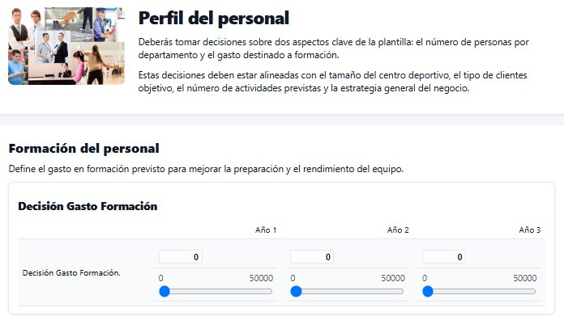
Control de decisiones: salario medio, variación de la plantilla y gasto en formación, con el botón «Recalcular».
Resume el impacto económico de tus decisiones de organización antes de cerrar la fase.
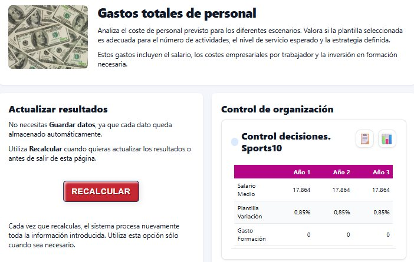
Las fuentes de ingreso del gimnasio: matrícula, cuota mensual y servicios complementarios (taquillas y toallas).
Muestra de dónde saldrá el dinero que debe rentabilizar tu inversión.
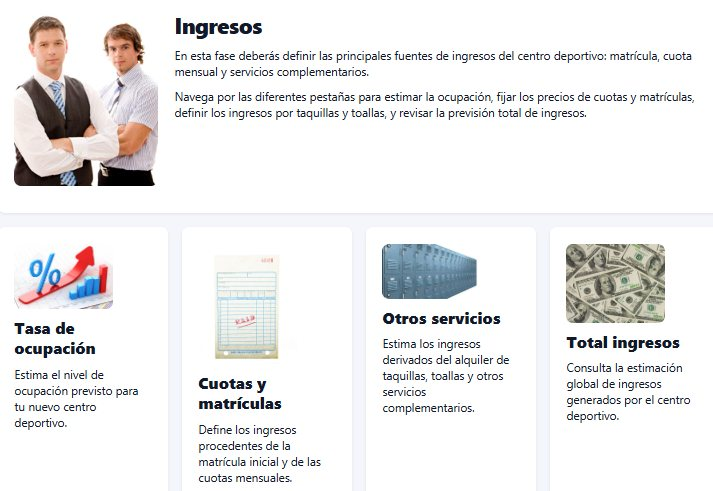
Estimas la tasa de ocupación de los años 1 a 3, con la ocupación de los competidores como referencia.
La ocupación es la base de todos los ingresos: una previsión irreal arrastra todo el plan.
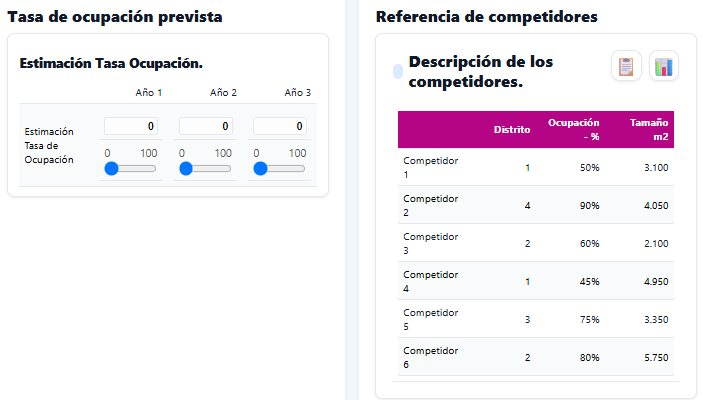
Repartes los socios previstos entre los 4 distritos y los 5 segmentos.
Te obliga a precisar de dónde y de qué tipo de cliente vendrán tus socios.
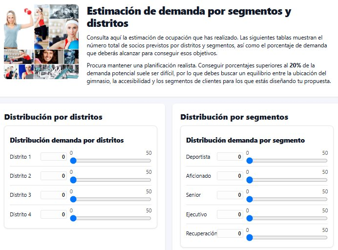
Fijas la cuota mensual de cada segmento para los años 1 a 3, con los criterios de decisión de cada segmento y los precios de la competencia como referencia.
El precio debe ser coherente con lo que valora cada segmento y con lo que cobra la competencia.
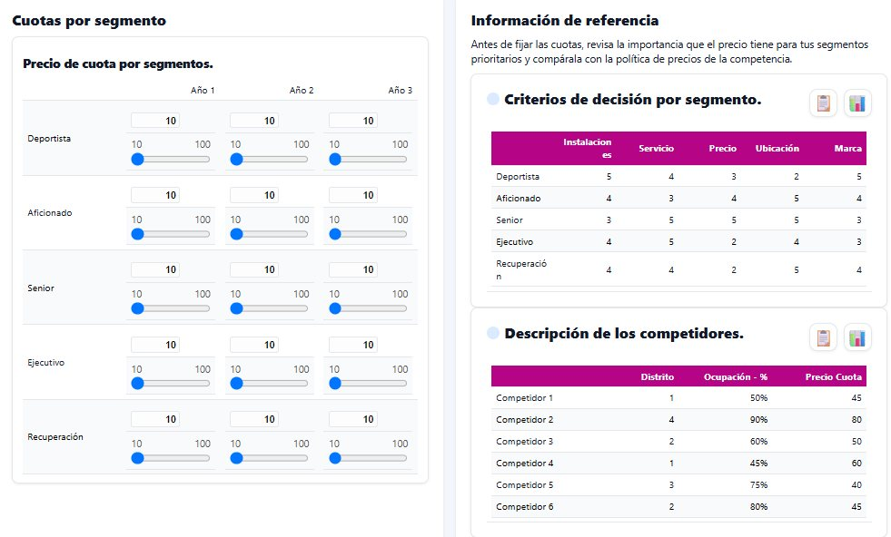
Defines el precio medio de la matrícula (0 a 125) y el porcentaje de socios que la pagan.
Una matrícula alta puede disuadir a los clientes; una muy baja renuncia a ingresos.
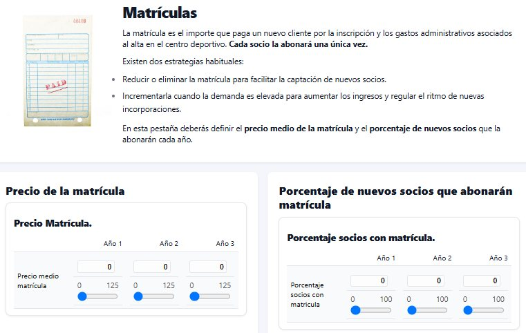
Estimas el porcentaje de socios que usan taquilla y toalla y fijas su precio medio.
Los servicios complementarios suman ingresos y se relacionan con la satisfacción de los socios.
Ingresos por cuotas, matrículas y servicios varios para los años 1 a 3, con el botón «Recalcular».
Reúne todas tus decisiones de ingresos para ver si el plan es viable.
Coste de lavandería y limpieza, actividades y suministros; el coste de suministros por m² depende de la superficie del local.
El tamaño del local pesa directamente en tus costes, aunque no llegues a llenarlo.
Resumen de costes y gastos (marketing, mantenimiento, salarios, formación y generales) por año, para volver atrás y ajustar si hace falta.
Comprueba que el nivel de gasto sea coherente con el tamaño del proyecto y con tu estrategia.
Distribución de la superficie por instalación (con los m² desocupados o sobreocupados) y la inversión total en local, edificio y equipamiento.
Relaciona el espacio que asignaste con el dinero que exige el proyecto.
Decides qué parte del proyecto financias con capital de los socios y qué parte con deuda bancaria a largo plazo.
El capital no tiene coste pero exige más rentabilidad; la deuda genera intereses. Si no cubres las necesidades, aparece un crédito extraordinario.
Ingresos por conceptos y cuenta de resultados prevista, con los aspectos clave a revisar: marketing, amortizaciones, gastos financieros y gastos generales.
Te muestra si el gimnasio será rentable y qué partidas lo condicionan.
Balance previsto de los primeros años: activo (edificios, equipamiento, efectivo), patrimonio neto y préstamos.
Un balance siempre cuadra: te ayuda a detectar necesidades financieras y si las pérdidas erosionan el patrimonio.
Redactas los puntos fuertes, puntos débiles, oportunidades y amenazas de tu proyecto.
Sintetiza el análisis interno y externo que justifica tus decisiones.
Tus prioridades estratégicas y la evaluación de la propuesta de valor por segmento.
Contrasta si tus prioridades encajan con lo que valora cada segmento.
Defines al menos 3 líneas de actuación en producto/servicio, ocupación/ingresos, gastos/costes y resultados/financiación.
Convierte tus decisiones en un plan escrito y coherente, listo para presentar a los inversores.
Recordatorio de la población por distrito y su distribución por tramos de edad.
Te permite verificar que tu ubicación tiene sentido frente al mercado.
Descripción del local seleccionado y distribución de su superficie por instalación.
Revisa si el local y su reparto respaldan tu propuesta de valor.
Ocupación de los monitores: porcentaje de su horario dedicado a actividades (más del 80 % puede perjudicar la calidad).
Equilibra la plantilla con la oferta de actividades para no sobrecargar a los monitores.
Estimación de demanda por distritos y por segmentos frente al máximo recomendado.
Comprueba que el reparto de tus socios sea completo y realista.
Gasto de marketing sobre ingresos frente al porcentaje recomendado.
Te dice si inviertes demasiado o muy poco en darte a conocer.
Ingresos por conceptos, cuotas por segmento y precio de la matrícula.
Une tu política de precios con los ingresos que realmente genera el centro.
Ratios económico-financieros (ROA, ROE, endeudamiento, beneficio bruto sobre ingresos) y la aportación de capital y préstamos por año.
Valida la rentabilidad y la solvencia del plan antes de presentarlo.
Resumen global del plan: propuesta de valor, niveles de instalaciones, actividades, marca, marketing y servicio, junto a los resultados económicos y ratios, con alertas en verde o rojo.
Reúne en una sola vista el diagnóstico estratégico y financiero antes de pasar a la gestión.
Fase 2 · Pon en marcha tu gimnasio y compite durante 4 periodos
Así verás los resultados de tu empresa en el simulador
Comparativa del Valor de la Compañía de todos los gimnasios, año a año: el indicador agregado que define el ranking.
Es la métrica que decide el ranking: te dice de un vistazo si vas por delante o por detrás de tus competidores.
Comparativo de todos los gimnasios: socios, ocupación, ingresos, beneficio, ROA, ROE, endeudamiento, valor de marca y niveles de equipamiento, servicio, actividades y satisfacción.
Te compara con los rivales en finanzas y en calidad a la vez, para detectar dónde ganas o pierdes ventaja.
Número de sesiones por actividad, coste medio y total, y evaluación del atractivo de las actividades por segmento.
Muestra si lo que inviertes en actividades se traduce en atractivo para tus segmentos.
Evolución del valor de marca de cada gimnasio y valor de marca por distrito.
Indica si tu marketing está construyendo marca con el tiempo y en qué zonas funciona mejor.
Cuotas por segmento y precio medio, precio de la matrícula y de los servicios de taquilla y toalla.
Permite relacionar tu política de precios con los socios y los ingresos que generó.
Número de socios por distrito, por segmento y cruzando distrito y segmento.
Revela dónde y en qué segmentos se concentra tu clientela, para orientar precios, actividades y marketing.
Ingresos por cuotas, matrículas y varios; ingresos por cuotas según segmento, e ingresos de toallas, taquillas y otros servicios.
Muestra de dónde viene el dinero y qué segmentos y servicios aportan más al negocio.
Plantilla por departamento (dirección, recepción-comercial, asesor-monitor, fisioterapeuta, mantenimiento y limpieza) y comparativa con los competidores.
Comprueba si el tamaño y la distribución del personal son coherentes con tus socios y el servicio que ofreces.
Coste de ventas (lavandería y limpieza, actividades y suministros) y gasto en mantenimiento.
Ayuda a identificar los costes que reducen tu margen y a decidir dónde ahorrar o invertir.
Capital, préstamos a largo y corto plazo y gastos financieros, con la comparativa de gastos financieros entre gimnasios.
Enseña cuánto pesa tu estructura de financiación sobre el resultado a través de los intereses.
Comparativa del nivel de equipamiento, el nivel de servicio y la satisfacción del cliente de todos los gimnasios.
Vincula la calidad que ofreces —equipos y servicio— con la satisfacción de tus socios.
Cuenta de resultados (de los ingresos al beneficio neto) y balance general (activo, patrimonio neto y préstamos).
Es donde se comprueba si tu gestión fue rentable y solvente; compárala también con lo previsto en la planificación.
Las pantallas donde introduces tus decisiones cada periodo
Cuota mensual de cada segmento (10 a 120), matrícula de entrada (0 a 125) y precio de taquilla y toalla (0 a 50), viendo el valor del periodo anterior.
El precio define tus ingresos y tu posición competitiva, y cada segmento reacciona a él de forma distinta.
Coste por hora de actividad (6 a 50) y número de sesiones semanales de cada actividad (0 a 30): Aerobic, AquaGym, Yoga, Danza Zen, SportFitness, Pilates y Spinning.
La oferta de actividades atrae a los segmentos, pero su coste debe equilibrarse con los ingresos.
Gasto en marketing y comunicación, y prioridad (1 a 5) de cada acción: buzoneo, publicidad en Internet, mailing, patrocinio y publicidad en medios.
Decides cuánto invertir y por qué canales llegar a tus segmentos prioritarios para construir marca.
Variación de la plantilla por departamento (−20 % a +20 %), gasto en formación y variación salarial (−18 % a +18 %).
El personal condiciona tanto el servicio como el coste: hay que equilibrar plantilla, formación y salarios.
Variación de la intensidad de ocupación (m² por cliente) y ajustes en la superficie de cada instalación.
El uso del espacio determina cuántos socios puedes atender y con qué nivel de confort.
Eliges hasta 3 proyectos de mejora del nivel de servicio (por ejemplo, programa de fidelización o sistema de calidad) y hasta 3 de mejora de la comercialización (por ejemplo, contenido web o visitas a empresas).
Con un límite de proyectos, debes priorizar las mejoras más alineadas con tu estrategia, como en una empresa real.
Préstamo a largo plazo (importe, plazo de 10 a 15 años y tipo de interés) y ampliación de capital.
Cómo te financias afecta los gastos financieros, el endeudamiento y tu capacidad de invertir; si no cubres las necesidades, se activa un crédito extraordinario.
Gracias por participar en FitnessGym